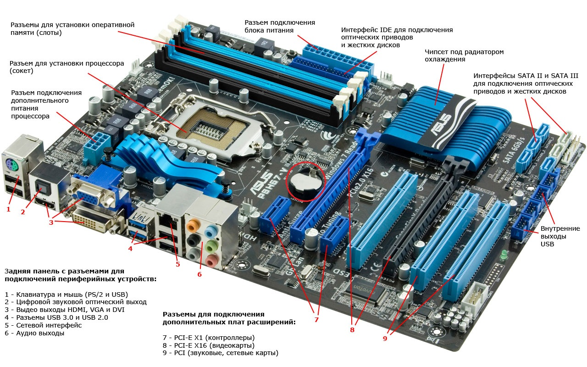
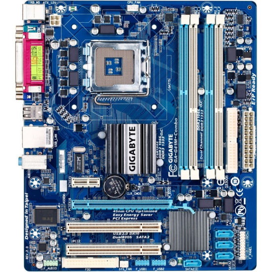
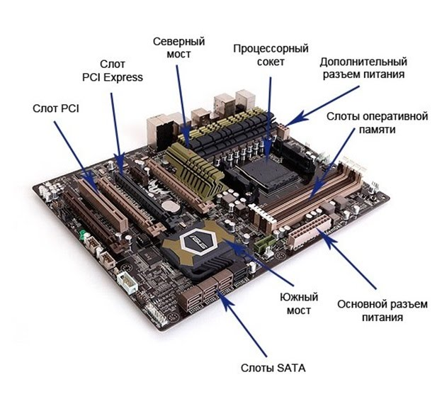
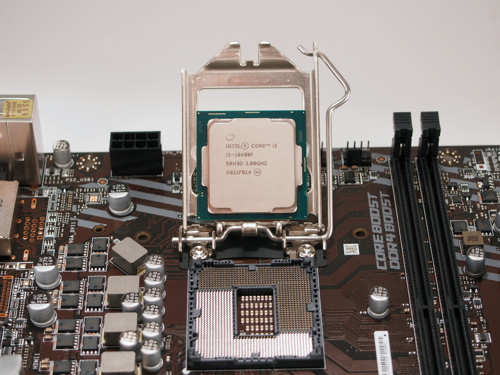
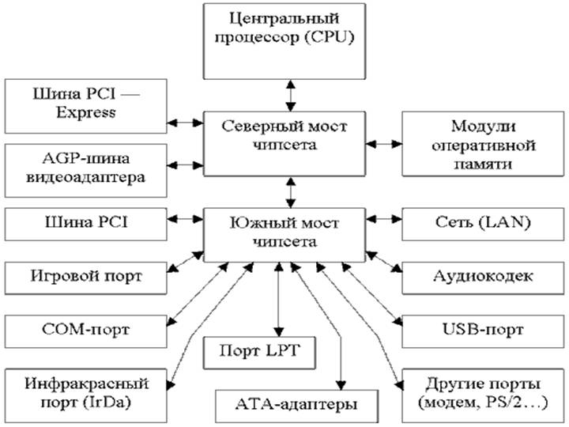

Материнская плата – центральная комплексная печатная плата, предоставляющая электронную и логическую связь между всеми устройствами, входящими в состав персонального компьютера

Материнская плата объединяет все устройства компьютера (видеокарта, оперативная память, звуковя карта, жесткий диск, т.д.) и связывает их между собой, впоследствии регулируя их сплоченный труд.
На материнской плате располагаются следующие основные элементы: процессор, оперативная память, набор управляющих микросхем (чипсет), BIOS, кэш-память, шины, слоты расширения, батарейка и другие устройства.

BIOS (Basic Input-Output System)
BIOS (BasicInput-OutputSystem - базовая система ввода-вывода) – это программа, прошитая в постоянное запоминающее устройство (ПЗУ) BIOS материнской платы отвечает за проверку работоспособности контроллеров, встроенных в материнскую плату, и большинства устройств, подключенных к ней (процессора, памяти, видеокарты, жестких дисков и т.д.)
Основные характеристики
Основные характеристики материнских плат, подлежащие отслеживанию (мониторингу) таковы:
Типы материнских плат

Шины
Для передачи данных между устройствами, расположенными на материнской плате, используются проводники, называемые шиной. Шины используются для передачи информации между устройствами и могут быть нескольких видов: шина главного процессора (на которой работает процессор и кэш-память), системная шина.
Чипсет
Чипсет – набор микросхем на материнской плате, который выполняет роль связывающего элемента, которое обеспечивает прохождение сигнала по шинам к оперативной памяти, слотам расширения, центрального процессора, таймера и других устройств. В современных компьютерах он состоит из двух частей: северный мост и южный мост.
Северный мост
Северный мост (Northbridge) - это системный контроллер, являющийся одним из элементов чипсета материнской платы, отвечающий за работу с оперативной памятью, видеоадаптером и процессором. Одной из основных функций северного моста является обеспечение взаимодействия системной платы и процессора, а также определение скорости работы. Также северный мост обеспечивает связь всех вышеперечисленных устройств с южным мостом.
Южный мост
Южный мост (Southbridge) - это функциональный контроллер, известен как контроллер ввода-вывода. Отвечает за так называемые "медленные" операции, к которым относится отработка взаимодействия между интерфейсами IDE, SATA, USB, LAN, EmbededAudio и северным мостом системы, который, в свою очередь, напрямую связан с процессором и другими важными компонентами
IDE
ATA (англ. Advanced Technology Attachment) или IDE (англ. Integrated Drive Electronics) — параллельный интерфейс подключения накопителей (гибких дисков, жёстких дисков и оптических дисководов) к компьютеру. В 1990-е годы был стандартом на платформе IBM PC; в настоящее время вытеснен своим последователем — SATA — и с его появлением получил название PATA (Parallel ATA).
Для подключения жёстких дисков с интерфейсом PATA обычно используется 40-проводный кабель (именуемый также шлейфом). Каждый шлейф обычно имеет два или три разъёма, один из которых подключается к разъёму контроллера на материнской плате (в более старых компьютерах этот контроллер размещался на отдельной плате расширения), а один или два других подключаются к дискам. В один момент времени шлейф P-ATA передаёт 16 бит данных. Иногда встречаются шлейфы IDE, допускающие подключение трёх дисков к одному IDE-каналу, но в этом случае один из дисков работает в режиме read-only.
SATA
SATA (англ. Serial ATA) — последовательный интерфейс обмена данными с накопителями информации. SATA является развитием параллельного интерфейса ATA (IDE), который после появления SATA был переименован в PATA (Parallel ATA).
SATA-устройства используют два разъёма: 7-контактный (подключение шины данных) и 15-контактный (подключение питания). Стандарт SATA предусматривает возможность использовать вместо 15-контактного разъёма питания стандартный 4-контактный разъём Molex (при этом, использование одновременно обоих типов разъёмов питания может привести к повреждению устройства).
USB
USB (англ. Universal Serial Bus — «универсальная последовательная шина») — последовательный интерфейс для подключения периферийных устройств к вычислительной технике. Получил широчайшее распространение и стал основным интерфейсом подключения периферии к бытовой цифровой технике.
Интерфейс позволяет не только обмениваться данными, но и обеспечивать электропитание периферийного устройства. Сетевая архитектура позволяет подключать большое количество периферии даже к устройству с одним разъёмом USB.
Кабель USB (до 2.0 включительно) состоит из четырёх медных проводников: двух проводников питания и двух проводников данных в витой паре. Проводники заключены в заземлённую оплётку (экран).
LAN
Расшифровка “LAN” означает “Local Area Networks” или “Локальная вычислительная сеть”. Она объединяет узлы, находящиеся на небольшом расстоянии друг от друга. Примером такой сети может стать сеть в офисе или университете.
EmbededAudio
Встра́иваемая систе́ма (встро́енная систе́ма, англ. embedded system) — специализированная микропроцессорная система управления, контроля и мониторинга, концепция разработки которой заключается в том, что такая система будет работать, будучи встроенной непосредственно в устройство, которым она управляет.


